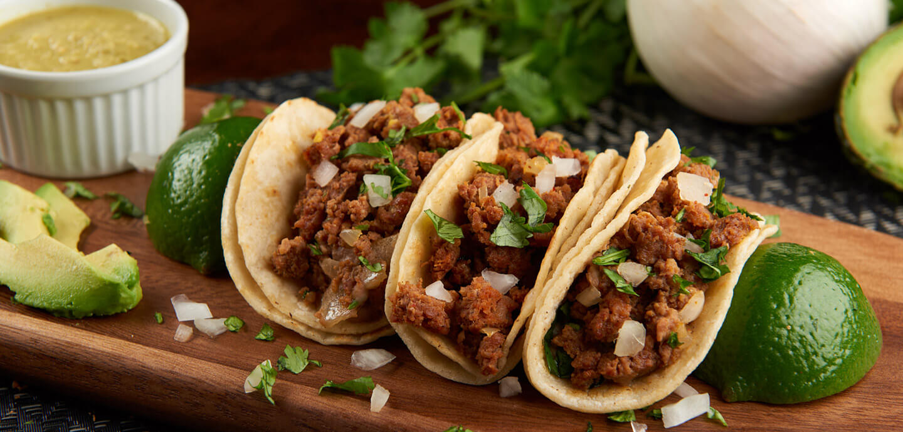

Chorizo Street Tacos

Three chorizo tacos stacked between lime slices
What better way to end the day than these simple chorizo street tacos? Quick and easy to make, they're sure to blow you away with flavor!
Ingredients
- 1 chorizo sausage link, casing removed and crumbled
- 2 tablespoons chipotle peppers in adobo sauce
- 4 corn tortillas
- 2 tablespoons chopped onion (to taste)
- 2 tablespoons chopped fresh cilantro (to taste)
Directions
- Combine chorizo, chipotle peppers and adobo sauce in a bowl.
- Heat a skillet over medium-high heat. Add chorizo mixture and cook until crisp. (5 to 7 minutes)
- Transfer cooked chorizo mixture to a plate, retaining grease in skillet.
- Heat tortillas in grease until warm and slightly crisp. (1 to 2 minutes per side)
- fill each tortilla with chorizo mixture, onion and cilantro
Home Page